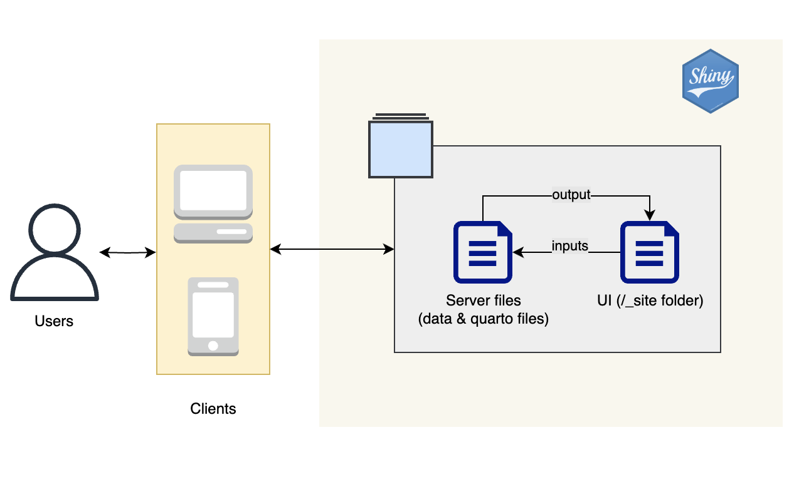

Project Proposal
1. Problem & Motivation
The residential rental market in Singapore is a very complex market with many variables that can affect a rental price of a property. For example, according to property guru a HDB rental rate per month can range from $2000 dollars to $4200 dollars depending on location and the type of unit. Factoring private property into the equation will only widen the range in rental rates per month and further complicate the rental decision of prospective tenants. This has sparked our interest as many of our foreign exchange peers have pointed out that they have encountered trouble navigating the complex residential rental market in Singapore.
To simplify the residential rental market in Singapore, our aim is to create an interactive web application that would allow prospective tenants to carry out analysis of different Airbnb listings simply through interacting with the user interface. This would allow prospective tenants to view Airbnb listings on the map simply by specifying type of listings and regions that they are interested in. Additionally, they would also be able to get an estimate of the price of a listing that they are interested in through geospatial weighted regression.
2. Project Objectives
- Conduct exploratory data analysis and plot a map of Airbnb listings in Singapore to gain an understanding of where Airbnb listings in Singapore are located.
- Conduct first-order spatial point pattern analysis: Deriving Kernel Density Estimation layer for visualizing and exploring the intensity of Airbnb listings in Singapore.
- Conduct second-order spatial point pattern analysis: Analyse Spatial point processes using appropriate G, F, K and L functions. Performing Complete Spatial Randomness test using Monte Carlo simulations to confirm the observed spatial patterns.
- Conduct Local Measures of Spatial Autocorrelation: Using local Moran’s or local Geary’s C statistical method to detect Spatial Custers and outliers.
- Conduct Geographically Weighted Regression: Building Multiple Linear Regression model and Hedonic Pricing model to predict prices of Airbnb listings.
3. Main Features
- Allow users to view various analysis done such as Kernel Density Estimation and hotspots and coldspots so that it can inform their decision making when choosing an airbnb location to stay for long term.
- Allow users to view predicted prices of Airbnb listings in that region. This gives them negotiating power and allows them to make more informed decisions on where they want to stay.
4. Data Source
The data is sourced from Inside Airbnb (http://insideairbnb.com/get-the-data), a global registry of airbnb listings related information from around the world. You can retrieve spatial data of listings from the portal as well as aspatial summary information about each listings. Points of interest are identified with a regions hotspot and coldspots. Hotspots can be determined by factors such as regions with high commercial centres which makes them attractive to stay near. Meanwhile coldspots may occur are regions with lower quality of life and less amenities nearby. It can function as a good indicator of affordable housing for short term stayers.
5. Literature Review
Spatial Variability of the ‘Airbnb Effect’: A Spatially Explicit Analysis of Airbnb’s Impact on Housing Prices in Sydney
Source: https://www.mdpi.com/2220-9964/11/1/65
Hotspot and coldspot analysis were done that revealed Airbnb hotspots were clustered around the City CBD, and the Eastern (Bondi) and Northern (Manly) Beaches near the coastal area. This could be explained by high tourism rates in Sydney that led to them staying in more airbnbs. This trend cannot be extrapolated to Singapore as Singapore’s unique airbnb ban prevents airbnb hosts from hosting for less than 3 months. Interesting temporal observations were made about the housing price growth in Sydney that led to more expensive airbnb prices. This could be applied to Singapore as well.
6. Comparison to Existing Applications
Predictive Price Modelling for Airbnb listings (Global)
Source: https://www.deepakkarkala.com/docs/articles/machine_learning/airbnb_price_modeling/about/index.html
Aspatial features such as listing price and booking availability, were used to predict future prices of airbnb. This project is targetted at hosts who are looking to optimally price their houses. However, this dataset is biased to cities such as Paris, London, New York, Berlin, Los Angeles which have the most number of listings. This could lead to a class imbalance problem during data exploration and prediction which is undesirable for a city with less observations in the dataset. By making our study specific to one city such as Singapore, we hope it will give users looking to rent in Singapore a better understanding of prices so that they can rent out airbnbs conveniently.
Our application: Happy Hideouts
Compared to past analysis, our analysis will make use of spatial and temporal features to predict listing prices for longer term stay in Singapore since Singapore bans the use of airbnb for stays of less than 3 months. Thus we expect that the target audience of Singapore’s airbnb scene will be very different from regular Airbnb users in other countries such as Los Angeles in the study “Airbnb Price Prediction in the Age of Social Distancing”. For instance, many exchange students and foreigners who are looking to stay in Singapore for work reasons may make up this target audience. Thus these unique set of users will find this application particularly useful.
7. UI Prototype


8. Application Architecture

9. Timeline